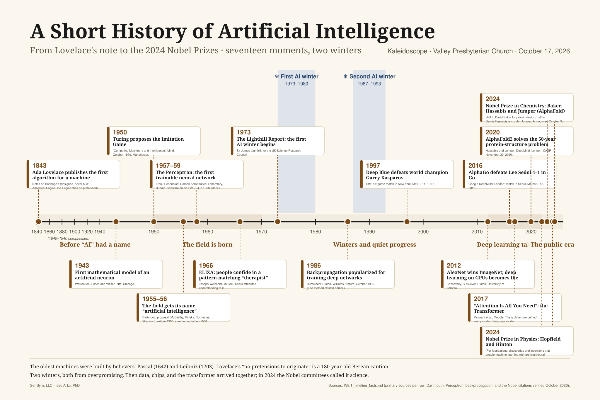
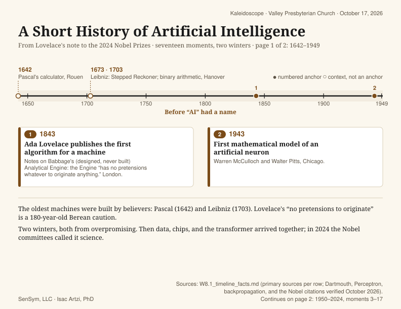
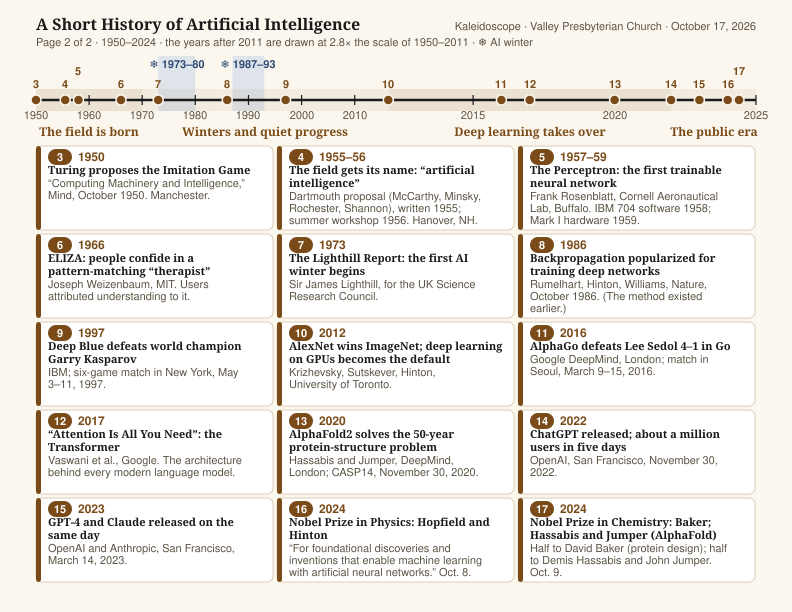

Sources: every date and attribution traces to a verified line in the workshop's timeline facts list. SenSym, LLC · Isac Artzi, PhD.
The same seventeen moments on two landscape US Letter sheets (11 × 8.5 in, type no smaller than 11 pt). Page 1 covers 1642–1949, page 2 covers 1950–2024. Download the PDF and print at 100%, landscape.

